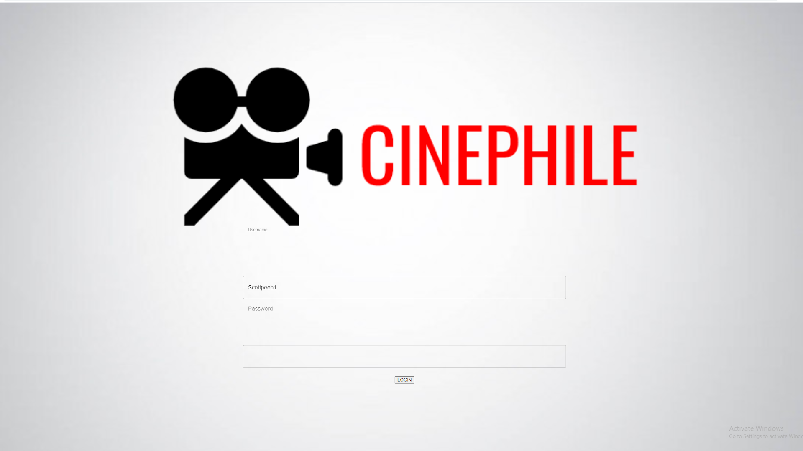
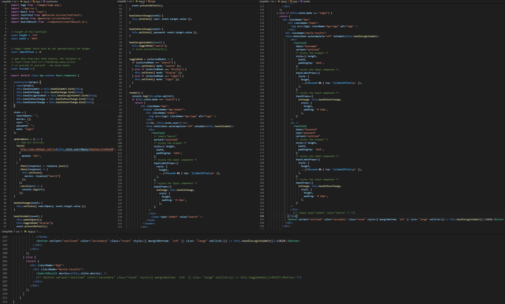

Authors: Arshdeep Sahi, Ireoluwatomiwa Oladele, Scott Peebles
Date: 2021-04-10
Complete (Yes/No)? Yes
Client side UI and Part of the App.js code
Complete (Yes/No)? Yes
 Showing database of userList, users as well as the usage and parameters for the OMDb APi
Showing database of userList, users as well as the usage and parameters for the OMDb APi
Complete (Yes/No)? Yes

User login

Searching tool

My list feature

Movie recommendation feature
Complete (Yes/No)? Yes

Movie recommendation algorithm
Complete (Yes/No)? Yes


Screenshot of App.js code and the add to list function. The app runs efficiently and results are loaded in secends. Analyzing the top genre is O(n^2) The rest of the code runs in O(n) or O(logn)